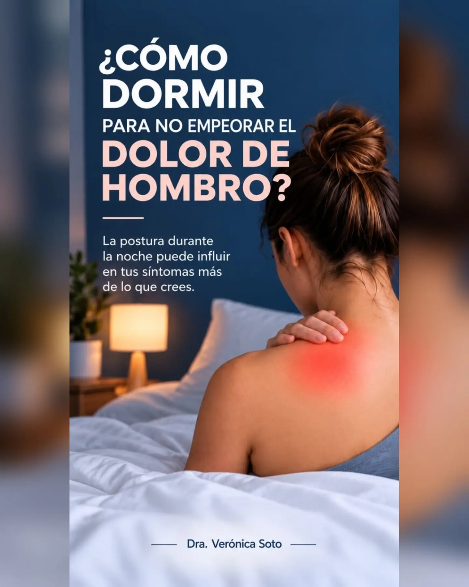
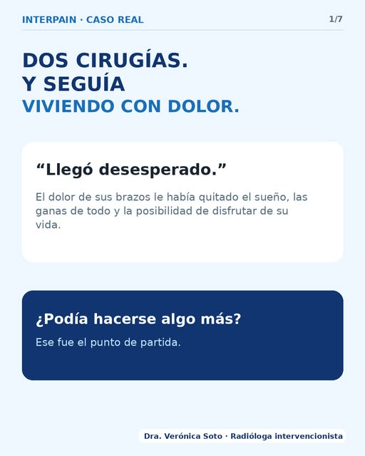
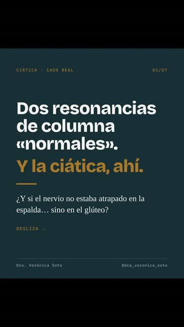
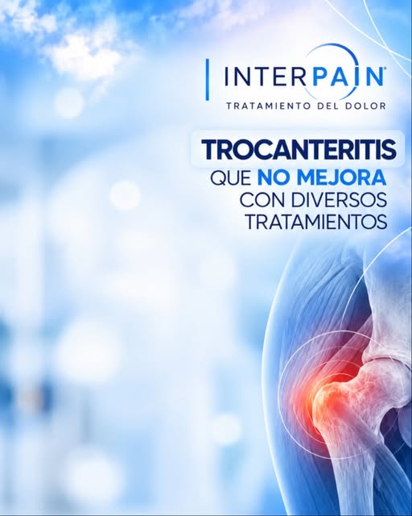
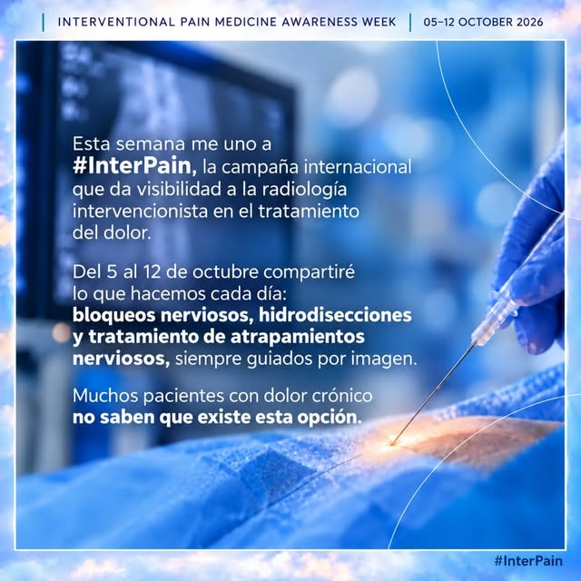

LA ECOGRAFÍA NOS AYUDA A MIRAR DENTRO
Primero,
comprender.
Acercarnos a la zona que duele permite relacionar tus síntomas con las estructuras que se estudian.
Desplázate para explorar ↓GIJÓN · ASTURIAS
Radiología intervencionista para valorar lesiones deportivas y dolor persistente. La imagen nos ayuda a mirar más allá del síntoma.
Explora cómo puedo ayudarte ↓Preparando la exploración 3D…
El desplazamiento guía la escena · Representación conceptual
LA ECOGRAFÍA NOS AYUDA A MIRAR DENTRO
Acercarnos a la zona que duele permite relacionar tus síntomas con las estructuras que se estudian.
Desplázate para explorar ↓IMAGEN EN TIEMPO REAL
El transductor obtiene imágenes de los tejidos. Esa información ayuda a valorar el problema y, cuando corresponde, a planificar un procedimiento.
INTERVENCIÓN ECOGUIADA
Cuando una punción está indicada, la ecografía ayuda al especialista a visualizar y orientar la aguja. La decisión depende de cada caso.
Representación conceptual para comprender la técnica; no reproduce una trayectoria clínica ni un tratamiento concreto.
Qué podemos valorar ↓02 / CADA DOLOR TIENE SU HISTORIA
Una valoración individual para relacionar tus síntomas, la exploración y los hallazgos de imagen.
El dolor al levantar el brazo o durante la noche merece una valoración. La ecografía permite estudiar tendones y otras estructuras y orientar las opciones de tratamiento.
El procedimiento adecuado depende del diagnóstico y de tu situación clínica.
Consultar mi caso ↗03 / UNA MIRADA MÁS PRECISA
Cómo empezó, qué lo empeora y cómo afecta a tu vida. El primer paso es entenderte.
Relacionar la exploración clínica con la imagen para orientar el origen de tus síntomas.
Cuando están indicados, los procedimientos ecoguiados permiten dirigir el tratamiento con ayuda de la imagen.
Valorar la evolución y coordinar la recuperación con otros profesionales cuando sea necesario.
04 / TU ESPECIALISTA
Radiología intervencionista · Gijón
Una práctica centrada en la imagen, los procedimientos ecoguiados y la valoración del dolor musculoesquelético.
En su divulgación aborda lesiones deportivas, dolor persistente y molestias tras cirugía, con una idea esencial: cada caso necesita su propia valoración.
Conoce su divulgación ↗EXPERIENCIAS COMPARTIDAS · DOCTORALIA
Fragmentos de opiniones públicas sobre la atención recibida. Puedes leer su contexto completo en la fuente.
«Muy agradecido con el trato recibido por Dra. Verónica Soto.»
Manuel Rodríguez Pérez
13 de octubre de 2026 · DoctoraliaLeer la opinión en su fuente ↗«Aclaró todas mis dudas con paciencia»
Gloria Gregorio
20 de agosto de 2026 · DoctoraliaLeer la opinión en su fuente ↗Opiniones individuales, no una garantía de resultados. La fuente indica número de teléfono verificado; esta página no verifica de forma independiente la atención recibida.
ANTES DE LA CONSULTA
Es un procedimiento en el que se utiliza ecografía para visualizar las estructuras y orientar la intervención. Su indicación se decide tras una valoración médica.
Sí. Conviene aportar los informes y pruebas previas para revisar el contexto y valorar las opciones disponibles, sin asegurar un resultado concreto.
No. La consulta permite evaluar el problema y decidir si procede un tratamiento, más estudio o la coordinación con otros especialistas.
EN INSTAGRAM · @DRA_VERONICA_SOTO
Divulgación de la doctora sobre dolor, movimiento y valoración individual.
Ver todas las publicaciones ↗
Dolor de hombro y descanso ↗Ver publicación en Instagram
Dolor después de una cirugía ↗Caso individual · Ver en Instagram
Dolor ciático y valoración ↗Ver publicación original en InstagramFormación en medicina deportiva ↗Ver publicación original en Instagram
Dolor lateral de cadera ↗Ver publicación original en Instagram
Abordaje del dolor persistente ↗Ver publicación original en InstagramEL SIGUIENTE PASO
Consulta en Gijón · Reserva a través de HT Médica